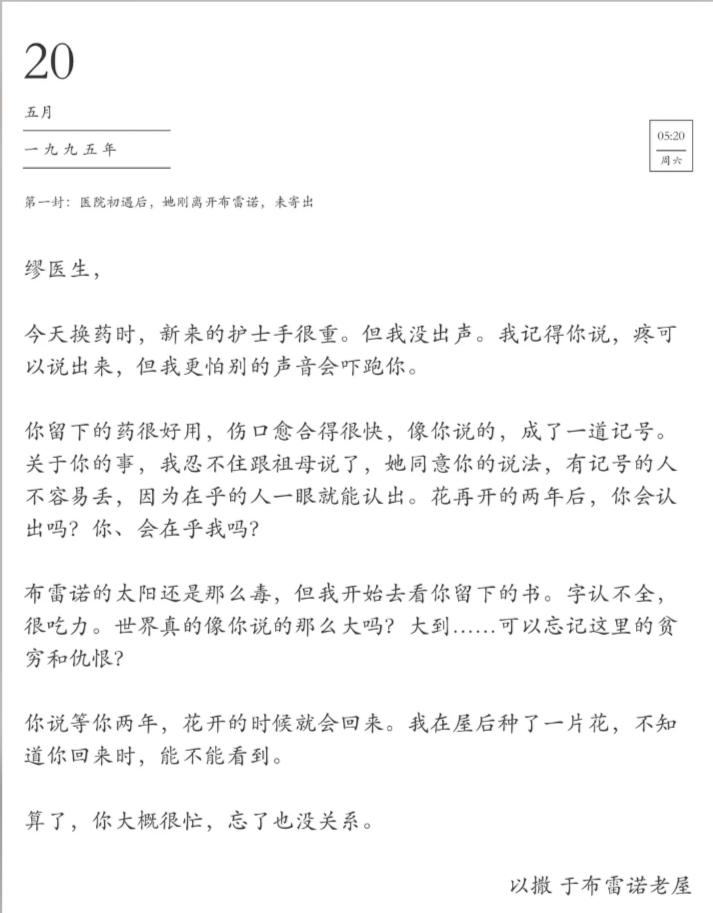

正在阅读
布雷诺来信
以撒致缪宏谟的二十五封未寄出书信。保留纸张、日期、收信人与日记入口，让故事线更容易继续。

UI Handoff / 2026
正在阅读
以撒致缪宏谟的二十五封未寄出书信。保留纸张、日期、收信人与日记入口，让故事线更容易继续。

用横向画廊承载情绪，用网格信息提高浏览效率。
以撒致缪宏谟的二十五封信
李平川致江宴的十五封信
戚凭川致江淮安的十封信
未寄出 · 2000-04-20
从废弃仓库回到广府住处当夜，纸张有被揉皱又展平的痕迹。
山顶归来后
布雷诺来信 / 第 1 页 · 30 秒前已自动保存
我把那张揉皱的纸重新铺平，像把一个夜晚的呼吸重新放回掌心。
灯光很低，窗外没有风。只有这封信还醒着，等我把没能说出口的话写完。
Embedded Widget
可拖拽进信纸，与手账数据联动，导出图片时完整保留。
把计划组件做成可嵌入、可跳转、可导出的信纸内容，而不是独立页面。